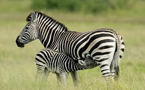
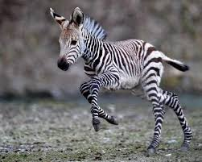

Зебра – животное, имеющее тело средних размеров, достигающее более 2 метров в длину. Вес зебры составляет 300-350 кг. Хвост у неё средней длины, обычно вырастает до 50 см. Самец зебры крупнее самки, его высота в холке составляет 1,4 — 1,5 метра. У этих животных достаточно плотное и коренастое телосложение. Ноги зебры короткие, оканчивающиеся крепкими копытами.
Рацион зебр состоит в основном из различных трав, в том числе осок, они поедают также древесную кору, листья, почки и корневища. Двигаясь по пастбищу, зебры съедают верхнюю часть травы, в основном злаки, облегчая доступ к нижним, наиболее питательным частям растений многочисленным африканским парнокопытным.
 